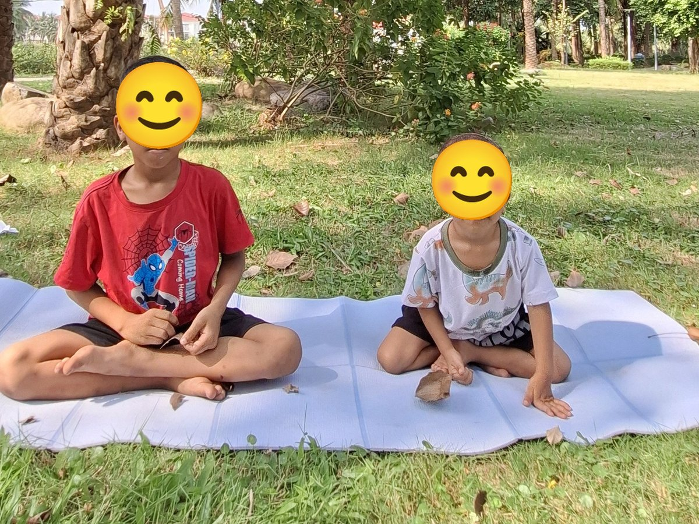

Chủ đề 16 · Tạm biệt trường mầm non
Sâu Nhỏ thành Bướm, tạm biệt trường xưa
🌟 Bài học trong câu chuyện
Giới luật yoga: Tapas – Kiên trì, cố gắng. Bé không bỏ cuộc, thử lại từng chút một.
Kỹ năng sống: Tự tin lớn lên, tạm biệt bạn bè.
1. Khởi động (2 phút)
Cả lớp ngồi xếp bằng thành vòng tròn. Cùng thở 3 hơi thở bông hoa: hít vào bằng mũi như ngửi hoa, thở ra bằng miệng thật chậm. Chắp tay trước ngực và chào nhau: “Namaste, chào các bạn!”
2. Câu chuyện: Sâu Nhỏ thành Bướm, tạm biệt trường xưa (đọc cho bé nghe, 4 phút)
Cô đọc trọn câu chuyện cho bé nghe trước. Sau đó cô kể lại từng đoạn ngắn và cả lớp cùng tập 10 tư thế ở phần bên dưới.
Sâu Nhỏ đã học ở trường mầm non Lá Xanh ba năm. Hè này, Sâu Nhỏ sẽ lên lớp 1. Ngày tạm biệt trường, Sâu đội chiếc mũ tốt nghiệp, đứng thật thẳng, thật tự hào.
Cô giáo nói: "Các con như những chú chim non sắp bay xa". Sâu Nhỏ nhớ lại bao nhiêu kỷ niệm: những buổi vẽ cầu vồng cùng bạn, những ngày còn bé tí, giờ đã cao lớn như cái cây.
Trước khi lên lớp 1, Sâu Nhỏ phải cuộn mình trong kén, ngủ một giấc thật dài để lớn lên. Đến ngày ra khỏi kén, Sâu thấy khó quá, lớp kén chật và dày. Sâu cố gắng, cố gắng mãi, đẩy từng chút một. Cuối cùng, kén mở ra, và Sâu Nhỏ đã thành một chú Bướm xinh đẹp!
Bướm bước những bước tự tin đến ngôi trường mới. Cô giáo nói mỗi bạn nhỏ là một ngôi sao, rồi sẽ tỏa sáng theo cách của mình.
Trước khi đi, Bướm ngồi tựa lưng vào bạn thân: "Mình sẽ nhớ bạn mãi". Rồi Bướm vẫy tay thật cao: "Tạm biệt cô, tạm biệt trường Lá Xanh! Con sẽ cố gắng học thật giỏi!"
3. Kể lại và tập 10 tư thế (6 phút)
-
 1
1Mũ tốt nghiệp
🧘 Tư thế Đứng thẳng (Mountain)
Lời kể khi tập: Sâu Nhỏ đội mũ tốt nghiệp, đứng thật thẳng, thật tự hào.
Cách làm: Đứng thẳng, hai bàn chân sát nhau, tay xuôi hai bên, vai thả lỏng, mắt nhìn thẳng. Giữ 3 đến 5 nhịp thở.
-
 2
2Chim non bay xa
🧘 Tư thế Máy bay (Warrior 3)
Lời kể khi tập: Sâu nhớ cô nói: "Các con như chim non sắp bay xa". Mình làm máy bay!
Cách làm: Đứng trên một chân, nghiêng người về trước, chân kia duỗi thẳng ra sau, hai tay dang như cánh máy bay. Cô có thể đỡ nhẹ chân sau giúp bé giữ thăng bằng như trong ảnh, hoặc bé vịn tường. Giữ 3 đến 5 nhịp thở.
-
 3
3Cầu vồng
🧘 Tư thế Cây cầu (Bridge)
Lời kể khi tập: Sâu nhớ những ngày vẽ cầu vồng cùng bạn. Mình nâng hông làm cầu vồng.
Cách làm: Nằm ngửa, co gối, bàn chân đặt trên sàn, nâng hông lên cao như cây cầu. Giữ 3 đến 5 nhịp thở.
-
 4
4Bé lớn rồi
🧘 Tư thế Cái cây (Tree)
Lời kể khi tập: Ngày xưa Sâu còn bé tí, giờ đã lớn như cây. Mình đứng làm cây cao.
Cách làm: Đứng một chân, bàn chân kia đặt vào bắp chân hoặc đùi (không đặt lên đầu gối), hai tay chắp trên đầu. Giữ 3 đến 5 nhịp thở.
-
 5
5Hạt mầm thành cây
🧘 Tư thế Em bé (Child's Pose)
Lời kể khi tập: Sâu Nhỏ cuộn tròn trong kén, ngủ một giấc dài để lớn lên.
Cách làm: Quỳ gối, ngồi lên gót chân, cúi người cho trán chạm thảm, hai tay duỗi ra trước hoặc để xuôi bên người. Giữ 3 đến 5 nhịp thở.
-
 6
6Bướm ra khỏi kén
🧘 Tư thế Con bướm (Butterfly)
Lời kể khi tập: Chui ra khỏi kén thật khó, Sâu phải cố gắng mãi. Cuối cùng Sâu thành Bướm! Mình vỗ cánh.
Cách làm: Ngồi, áp hai lòng bàn chân vào nhau, hai gối mở sang hai bên, tay dang như cánh hoặc nắm bàn chân, gối đập nhẹ như cánh bướm. Giữ 3 đến 5 nhịp thở.
-
 7
7Bước lên lớp 1
🧘 Tư thế Chiến binh 1 (Warrior 1)
Lời kể khi tập: Bướm bước những bước tự tin đến ngôi trường mới.
Cách làm: Một chân bước dài ra trước, gối trước hơi gập, chân sau thẳng, hai tay vươn lên cao. Giữ 3 đến 5 nhịp thở.
-
 8
8Ngôi sao tương lai
🧘 Tư thế Ngôi sao (Star)
Lời kể khi tập: Mỗi bạn là một ngôi sao, rồi sẽ tỏa sáng. Mình dang tay chân thật rộng!
Cách làm: Đứng dang rộng hai chân, hai tay dang ngang thật thẳng, cả người thành ngôi sao năm cánh. Giữ 3 đến 5 nhịp thở.
-

9Ôm bạn tạm biệt
🧘 Tư thế Tựa lưng đôi (Partner Back-to-Back)
Lời kể khi tập: Bướm ngồi tựa lưng bạn thân: "Mình sẽ nhớ bạn mãi".
Cách làm: Hai bạn ngồi xếp bằng cạnh nhau (hoặc tựa lưng vào nhau), nhắm mắt, cùng thở chậm. Giữ 3 đến 5 nhịp thở.
-
 10
10Vẫy tay tạm biệt
🧘 Tư thế Đứng nghiêng sườn (Standing Side Bend)
Lời kể khi tập: Bướm vẫy tay: "Tạm biệt cô, tạm biệt trường Lá Xanh!"
Cách làm: Đứng thẳng, hai tay vươn cao, nghiêng người sang trái, về giữa, rồi nghiêng sang phải. Giữ 3 đến 5 nhịp thở.
4. Thư giãn (2 phút)
Các con nằm ngửa, tay chân thả lỏng, nhắm mắt lại. Cô nói nhẹ: “Hít vào thật chậm… thở ra thật chậm… Con nhớ lại câu chuyện vừa rồi, nhớ người bạn mình thích nhất trong truyện. Cơ thể con mềm như bông, nhẹ như mây.” Sau đó các con nghiêng người, từ từ ngồi dậy.
5. Trò chuyện cùng bé (1 phút)
Sâu Nhỏ kiên trì chui ra khỏi kén để thành bướm, cũng như các con cố gắng mỗi ngày để lớn lên. Đó là Tapas.
Cô hỏi các con:
- Ở trường mầm non, con thích nhất điều gì?
- Lên lớp 1, con muốn học điều gì?
Kết thúc bằng lời chào “Namaste” và một nụ cười.
Lưu ý cho thầy cô và bố mẹ: Tập trên thảm, không tập ngay sau khi ăn no. Bé chỉ làm tới mức thấy dễ chịu, không ép bé. Tư thế đứng một chân có thể cho bé vịn tường hoặc vịn tay người lớn.